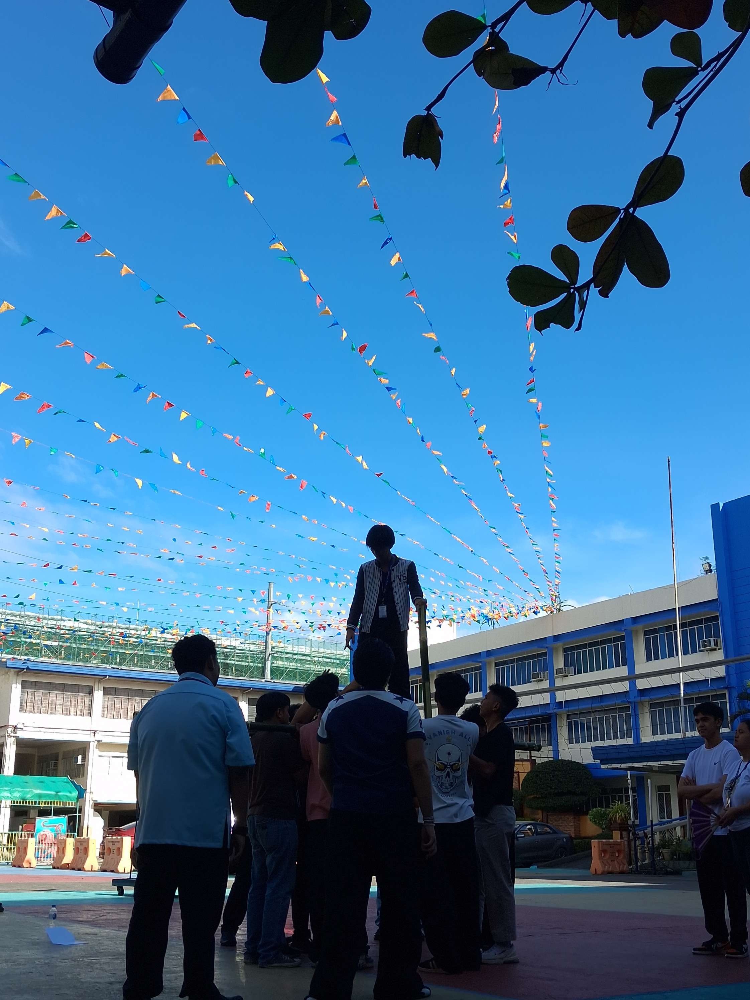
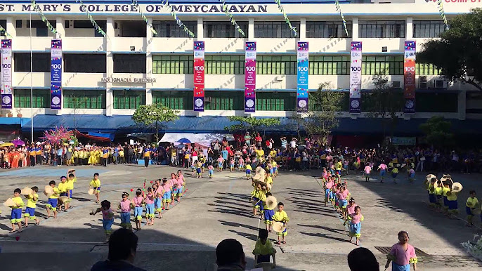
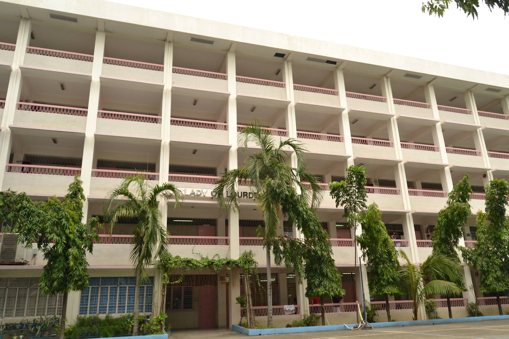
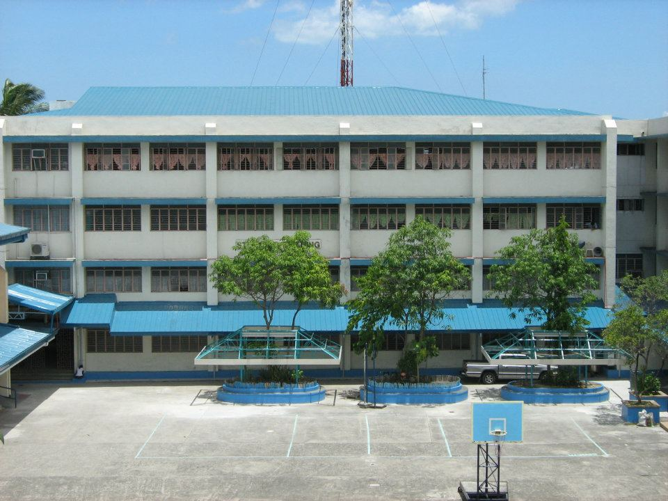

OUR HISTORY
St. Mary’s College of Meycauayan was founded in 1916 by a parish priest and was formerly called Escuela Parroquial de Meycauayan that offered primary program with Catechism as its core subject. Later on the school was managed by the Religious of the Virgin Mary (RVM), the first Filipino Congregation founded in 1684 by a Filipina, Mother Ignacia Del Espiritu Santo. In 1929, it was then renamed as Escuela Catolica de Meycauayan.
When the Second World War broke in 1941, classes were suspended until July 1944 and it reopened in June 1945 with the name St. Mary’s Academy with the opening of Intermediate and First Year High School programs. The succeeding levels were opened and gained government recognition each year. Hence, March 1949 marked the graduation of the first ten high school students.
The school was torn down completely by fire on April 4, 1949. The then Superior, Rev. M. Ma. Justina Martinez and Principal, M. Ma. Dolores Verceles managed to hold classes in private houses owned by Mr. Mariano Floro and Mrs. Felicisima Cadiz while a two-storey building was being constructed. This was finished in 1954. Eleven years later, the Kindergarten course was recognized.
School Year 1962-1963 was a significant year when St. Mary’s received an award of 25 Spanish dictionaries from the Spanish Embassy in Manila for having topped all other schools in Spanish in the National Government Examinations administered in March 1962. One dictionary was given to Rogelio Decilio, the student who scored 96% in the same examination. As the school population increased the need for physical expansion also arose. In 1963, a 700 square meter lot was acquired at Saluysoy, Meycauayan with the Torrens title being granted by Mr. Vicente Floro and the Right of Way by Mr. Lucero.
The two classrooms that were constructed in 1962 were finished the next year and it was then blessed by Rev. Msgr. Felix Sicat in August 1963. In 1965, a six-room annex was completed. That same year, its Kindergarten course was granted government recognition and it was also the first time that St. Mary’s Academy participated at the BULPRISA Meet. In 1966, the school was awarded by CEAP with a Golden Jubilee Plaque for its 50 years of establishment. Expansion continued and in 1968, a four-story building was constructed, and its four rooms extension was made in 1978. At present, this is the Assumption Building. One of the most significant improvements of St. Mary’s Academy was the completion of a concrete four-story building in October 1981 marking the complete transfer of the whole school from kindergarten to high school. This is the Mo. Ignacia Building which is also known as the Administrative Building since almost all offices were located here. To meet the needs of the increasing school population, annex rooms were constructed facing the MacArthur Highway. A seven room Kindergarten building was erected at the back of the administrative/elementary building.
The construction was completed in October 1984. Looking at the demands of the Education Apostolate, the Sisters assigned at St. Mary’s Academy opened the doors to the students in the tertiary level. Courses offered are Bachelor in Elementary Education (BEEd) with specialization in Preschool Education, English, Filipino, Mathematics, Social Studies, Science and Health; Bachelor in Secondary Education (BSE), major in English, Filipino, Mathematics; Bachelor of Science in Commerce (BSC), major in Accounting, Management, Financial Management, Marketing and Computer. The school was then named ST. MARY’S COLLEGE OF MEYCAUAYAN in 1986. Thus, it had its first College graduates in March 1990.
The yearly marked increase in enrolment in the three levels required more classrooms. Thus, a new four-story building was constructed with twenty-six classrooms, including the new library, faculty room, home economics rooms and offices for the guidance and subject area coordinators.
The Multi-Purpose Hall was inaugurated and blessed by Msgr. Sabino Vengco on January 22, 1989. This provides adequate space for school programs/activities, P.E classes and is shared with the 14 BASIC EDUCATION DEPARTMENT STUDENT HANDBOOK BASIC EDUCATION DEPARTMENT STUDENT HANDBOOK 15 public for seminars/workshops and fora. Air-conditioned audio-visual room, chapel, centralized library, canteen, reading, and speech laboratory were also developed. The same year, the movement for the Beatification of Mother Ignacia was launched at St. Francis of Assisi Church participated by Rev. Fr. Pablo Reyes, Rev. Fr. Antonio Rigoman, Rev. Fr. Rufino Sulit, S. Ma. Carmelita Abiera, RVM and the communities of St. Mary’s College of Meycauayan and St. Mary’s Academy of Sto. Nino. In 1990, the school launched and intensified the program on adopting a community and in 1993, a full-time social worker was hired to manage the Mother Ignacia Social Concern Center and the needs of the adopted community. Several breakthroughs were done in the succeeding years. In 1993, computerized grading system was introduced and in 1995, centralization of all libraries in all levels was done. In 1996 through the efforts of S. Ma. Alice Tan, RVM SMCM became one of the first schools to have used and gained access to the Internet.
In 1998, a new five-story building for the College Department was constructed and was named Our Lady of Lourdes Building. To serve better its client and attain more fully its vision and mission. SMCM Grade School Department ventured on PAASCU Accreditation Survey headed by S. Ma. Alice Tan, RVM and S. Ma. Irene Abang, RVM and was granted a Level 1 accreditation status on November 30, 1998. Then on January 17, 2000, it also passed the Preliminary Survey after undergoing the Consultation Visit on October 25, 1999. On January 22-23, 2001, the department formally underwent the Level II PAASCU accreditation and was granted a five-year accreditation status. Keeping with the ideals of quality education, St. Mary’s College of Meycauayan High School Department headed by S. Ma. Celedonia Amper, RVM and S. Ma. Yolanda Capiña, RVM set its goal for accreditation by the Philippine Accrediting Association of Schools, Colleges and Universities (PAASCU). Preliminary survey was conducted last January 25-26, 2001. Motivated by the positive results of the Preliminary Survey, the department prepared for the Formal Survey conducted on October 17-18, 2002. In May 2004, PAASCU granted the High School department accredited status for three years. St. Mary’s College of Meycauayan has been awarded the DIN ISO 9001:2000 Certification. In September 2002, the school started its ISO certificate campaign headed by its directress then, S. Ma. Reinalda Sison, RVM and by February 23-24 of the same school year had its final audit and received its ISO certification from TUV Rheinland/ Berlin Brandenburg. This certification from ISO is in line with the reformulated vision and mission of SMCM which stresses the design, development, and implementation of Basic and Higher Education services. On June 23, 2003, ISO certification awarding ceremony was held at St. Mary’s College of Meycauayan by the TUV Rhein- land/Berlin Brandenburg. In 2005, the Grade School Department was granted PAASCU Level 2 Accredited Status for five years. To ensure continuity of providing quality education, the high school department welcomed the PAASCU accrediting team last August 29-30, 2007, for the Level II Accreditation. All areas of instruction and services were observed and evaluated. It was in December 2007 that the PAASCU gave the Level II Accreditation. On the first celebration of First Friday Mass for the year 2008, Mrs. Ana Michelle S. Ricalde, the High School principal gladly announced the good news that the department has been awarded by the PAASCU re-accreditation for a period of five years.
The school’s physical appearance became a welcoming sight - a refreshing look with the newly installed school façade in February 2009 at the MacArthur Hi-way. It can clearly serve as a landmark of the place where it is located. The façade’s blessing was held with grandeur which was attended by Hon. Joan Alarilla, the City Mayor of Meycauayan and former Vice Mayor Dennis Carlos, Mother Ma. Clarita R. Balleque, RVM, the RVM sisters and other guests. Msgr. Epitacio Castro celebrated the mass and blessed the school’s new façade. 16 BASIC EDUCATION DEPARTMENT STUDENT HANDBOOK BASIC EDUCATION DEPARTMENT STUDENT HANDBOOK 17 In that same year, the Grade School Department was granted another five years of accredited status after the second Resurvey visit last August 25-26, 2009. In 2010, ISO Recertification with upgrade ISO 9001:2008 was granted to SMCM effective until October 10, 2013. Installation of Air-Conditioned Unit for each classroom from Grade School to High School was successfully done at the start of the school year 2011-2012. Year 2012 was also a significant year for the institution. PAASCU granted another five years of Level 2 Accredited status to the High School Department. Its 97th Foundation Theme: SMCM, A Cornucopia of Excellence Towards 2016 led to the many academic and cultural awards regaining another Gintong Kabataan Awardee after so many years in the person of Robby Brian de Guzman and the Key of Excellence from UP Lakan in 2013. In preparation for the Centennial Anniversary of St. Mary’s College of Meycauayan in 2016, the construction of some significant areas and facilities of the school were done.
The Centennial Stage was constructed in February 2013. The audio-visual room was relocated to give way to the Museum Archives which was blessed on August 8, 2014, and a new school façade was built. The museum was constructed by Engr. Milord Cruz and designed by Mr. Roderick Serillano with a team of Faculty members. Also, school year 2014-2015 marked another important event in SMCM history - the merge of two giant departments - Grade School and High School into one Integrated Basic Education Department headed by one Principal, two Academic Coordinators, eight Subject Area Coordinators, three Prefect of Students and two Student Activity Coordinators. For this reason, the new office of the IBEd Middle Administrators was located at the center of the administrative building, thus the Guidance Center was moved to the High School Department Administrative office area. After a year of the IBEd implementation, the school underwent the PAASCU re-accreditation and was granted the Level II status last December 14, 2015, valid for five years.
The institution was re-certified by the TUV Rheinland Philippines Inc. from 2013-2016. St. Mary’s College of Meycauayan from School Year 2006 to the present, under the leadership of Mo. Ma. Clarita R. Balleque, RVM, the highly qualified administrators, the teaching and the support staff believe in their vital role of creating an atmosphere of learning where Christ is the foundation of the whole educational enterprise and the need to imbibe the apostolic spirit to be living witnesses of Christ both in the classroom and in their personal lives. In February 2016, St. Mary’s College of Meycauayan started offering Senior High School for school year 2016-2017 offering Academic Track namely: STEM-Science, Technology, Engineering and Mathematics; ABM-Accountancy and Business Management; HUMMS-Humanities and Social Sciences and TVL-Home Economics and Information and Communications Technology. School year 2017-2018 is a year of innovation as it leveled up to a quest of building a niche, a new brand for St. Mary’s College of Meycauayan making it as a center for Science and Technology. Highlighted by the reconstruction of highly improved and advanced Science Laboratories, equipped with new facilities and apparatuses, the school also ventured into a revitalized Science, Technology, Engineering and Mathematics curriculum and with the 20 modules from the United States of America, students will acquire learning in Robotics, Laser Technology, Alternative Energy, Digital Manufacturing, Virtual Architecture, Environment and Ecology, Pneumatics, Forensic Science and more. Great improvements in other facilities are evident as the school continues to raise the bar of quality and excellence as renovations are also made into its libraries and the establishment of a beauty and wellness center and venue for Practical Nursing and Caregiving. Kinder rooms are transformed to learning spaces, computer laboratories are upgraded through the membership of the school to Acer Academy ensuring better delivery and worthwhile learning experience for all students. The newly constructed venues for learning were inaugurated during the blessing ceremony led by Rev. Fr. Marcelino Ocariza III last August 19, 2017, during the parents-teachers assembly. 18 BASIC EDUCATION DEPARTMENT STUDENT HANDBOOK BASIC EDUCATION DEPARTMENT STUDENT HANDBOOK 19 Along with this venture is the school’s mission of making the Marians globally competitive when it establishes a partnership with ACER Computer Software Services on January 4, 2017, allowing its clientele and stakeholders the advanced technology; thus, making SMCM expand its horizon in the academe. In the same academic year, Spiral curriculum is implemented in Science and TLE allowing a specialized teacher to handle specific areas of their expertise. TLE provided exploratory and specialized courses like computer Hardware Servicing, Cookery, Food and Beverages Services, Commercial Cooking, Bread and Pastry and Beauty Care to allow students to receive training and adopt skills and later as NCII holders. As it continues to soar higher in fulfilling its mission and imbibed the value of “Duty Care”, SMCM opened its doors to deserving students from public schools through scholarship grants allowing a new face for the institution by extending opportunities to all regardless of stature and capacities because indeed, quality education is for all. It is worthy to note that the effects of the education apostolate in this part of the country upon the people and upon the Church as a whole, have been tremendously encouraging. A lively, living faith is visibly experienced and felt.
The Marians sharing their goods and their offering of their service in the spirit of charity and Christian brotherhood are witnesses to the tremendous effect of the apostolate in the larger community. SMCM is a beacon of light to its stakeholders - a proud educational institution duly accredited by a reputable accrediting agency namely the Philippine Accrediting Association of Colleges and Universities (PAASCU) recently recertified and upgraded to DIN ISO 9001:2008. It stands as an emblem of dignity as it nurtures and develops its students to be true to their faith, exemplars in their service and humble in their excellence. SMCM develops responsible Marian professionals. On February 19, 2018, marks another historical event in St. Mary’s College of Meycauayan as it unveils a Legacy Wall that will serve a landmark of a new milestone for the school. Moreover, the Legacy wall will imprint a lifetime mark symbolizing the generosity of the people behind the success of the institution; at the same time, it opens a threshold of another educational innovation, endeavors, and service as the newly reconstructed Saluysoy Gate paves the way of reaching out to the rest of the town. Representatives of Batch ’68 and ’92, in the persons of Dra. Salve Olalia and Mr. Julius Contreras led the unveiling of the Legacy Wall after the blessing. On February 1, 2018, from a formal visit of the Department of Education, Region III, St. Mary’s College of Meycauayan paved the way to accepting a new educational venture. As approved by the Department of education, the school was permitted to offer a Special Science Class beginning the school year 2018- 2019, catering the incoming grade 7 students. With this venture, the school took the first step of sending out the grade six student who took the qualifying exam on February 24, 2018. Out of the students who took the examination, St. Mary’s College of Meycauayan, got the top-ranking student. Not only in Science that the students are good, but also in the field of Mathematics, of which a student from the grade school level competed for the 4th International Mathematics Wizard Challenge (IMWix) 2018 competition in Indonesia. Another leaf was added in the SMCM laurel for finishing the pilot year of Senior High School curriculum, marking its first graduation on March 18, 2018. In September 2019, SMCM began its preparations for being one of the three pioneer schools in the Philippines to venture to SHS accreditation. Thus, on February 6-7, 2020, the Formal PAASCU Preliminary Survey Visit was conducted. For successfully passing, the Formal PAASCU visit was slated on September 2020, but due to COVID 19 pandemic, SMCM suspends its accreditation for SY 2020-2021. The school, in its 102nd year aims to make the institution the center of quality education, as it also caters to establishing the culture of research, not only for the students but also for the entire school faculty and administration. On its 105th year, the institution experienced the first year of the implementation of an Online Distance Education due to the 20 BASIC EDUCATION DEPARTMENT STUDENT HANDBOOK BASIC EDUCATION DEPARTMENT STUDENT HANDBOOK 21 CoViD-19 pandemic.
The shift from a traditional face-to-face to online learning prompted SMCM to be more innovative and adaptive. This led to the design, development, implementation, and evaluation of the SMCM@HOME: Heightening Opportunities through Ignacian Marian Distance Education with its main arm, the SMCM Instructional Delivery Package (SID) that assures students to learn effectively even at the comforts of their own home. The second year of the implementation of the SID package and the first PAASCU Virtual Program Accreditation (VPA) of the Basic Education Program (Resurvey Visit-Level 3) and Senior High School Program (Formal Visit) marked the 106th year of SMCM. The simultaneous VPA of the BED & SHS was held on March 17-18, 2022. All areas were analyzed, evaluated, and observed. It was a milestone for the institution when PAASCU sent the good news on June 16, 2022, and July 11, 2022, that the SHS & BED Programs passed the VPA, respectively. As SMCM prepared for the Blended Learning Education set-up for SY 2022-2023, preparations were done to ensure that compliance of requirements and implementation of health protocols for a Progressive Expansion of Face-to-Face Classes would strictly be followed. DepEd officials inspected the school on June 23, 2022. Fortunately, on July 21, 2022, the institution was granted the SMCM School Safety Assessment Tool (SSAT) Compliance Certificate for having been found compliant with all the four indicators in the SSAT tool (Managing School Operations, Focusing on Teaching and Learning, Well-being and Protection, and Home-School Coordination) pursuant to DepEd-DOH Joint Memorandum Circular No. 01, s 2021 and duly endorsed by the Schools Division Superintendent. In addition, the Safety Officers of the Municipality of Meycauayan also visited and inspected the school on June 29, 2022. Thankfully, the institution was awarded with a Safety Seal on July 13, 2022, showing that SMCM have been following safety and health protocols against COVID-19. Beginning October 2021, the school has been sharing to its stakeholders the context of the blended learning and the possibility of implementing limited face to face classes for SY 2022-2023. With series of consultations and thorough planning, the school focused on the Blended Learning or the combination of Onsite and Online education delivery. The Blended learning package is called SMCM HOUSE: Developing Students at Home with School Environment. Thus, in Blended Learning, there are two main learning modalities evident: ONSITE AND ONLINE both with synchronous and asynchronous activities. Learners can seamlessly shift from face to face to online learning as both are available. St. Mary’s College of Meycauayan reached a new milestone last September 2021 as it increases its students’ international exposure by joining the Planet Fraternity. It is a project that aims to create a better world for everyone. It allows OIEC students and educational teams around the world to bond with fraternity by working together to find concrete solutions to the 17 sustainable development challenges of the United Nations. Twenty students from the Grade-8 SSC were selected last school year as the pioneers of this international exposure. The said group of students won a video-making contest and as part of their prize, one of them, together with the moderator and the school president, will attend a congress in France on November 30 to December 4. All expenses, from the plane tickets, meals, and accommodation, will be shouldered by Planet Fraternity. Moreover, for this school year, we expand our exposure in the program as we open the participation to all levels of the Junior High School and Senior High School. Each level will have 20 representatives who will be able to meet students from other countries with the intention of building together a more human, solidary, fraternal, and sustainable world. A total of 120 students will be joining the said program for this school year. It is in this sense, that the school continues to live-out its core values of Faith, Service, and Excellence with students who are exceptionally given with strong faith, intelligence, sound decision making skills, social responsibility, globally competitive skills, and hopeful leaders in the future; thus, continue its lifetime legacy of reaching out to the world through its quality education.



